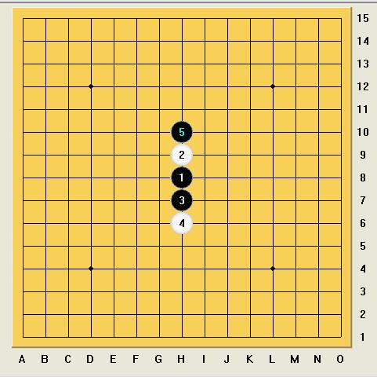

求有关黑5的系列变化拆解
首页
★棋心愉悦★
#1 求有关黑5的系列变化拆解 作者：龙小小 发表时间：2010-7-5 22:24:28

请大家把图片发出来分享一下
#2 Re:求有关黑5的系列变化拆解 作者：越狱行辕 发表时间：2010-7-6 6:55:57
=======上图对应的爱五子棋谱代码如下，以便你拆解：========
h8h7h9h10h11i7i11
====================================================== ［ 龙小小 于 2010-7-7 22:41:02 时花20金币送鲜花一朵］